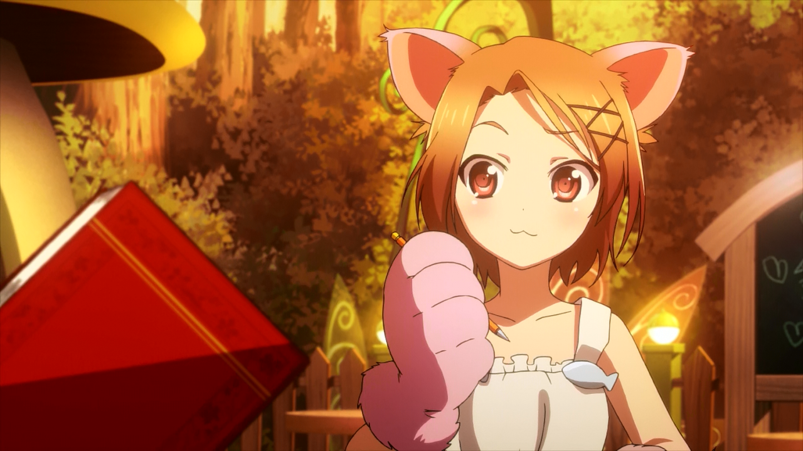

Рельное имя - Тиюри Курасима
(倉嶋 千百合 / Kurashima Chiyuri)
Игровое имя - Лаймовый колокольчик
(Lime Bell)
Cтатус: Ускоренная
Дата рождения: ...
Тию подруга детства Харуюки и Такуму.
Личность
Добрая и чуткая молодая девушка, что не мешает ей время от времени становиться серьезной и выполнять роль старшей сестры и поучать кого-либо. Любит постоянство (будь то в отношениях или делах) и постоянно пытается его добиться. Ревнива, немного, и не сдержанна в присутствии лучших друзей. Не держит долго злобу на человека и любит прощать, требуя впрочем, для этого кучу сладостей. Ценит в людях больше их личностные качества, нежели внешние.
Внешность
Реальное тело
Изящная, очаровательная девушка с бледно-розовыми глазами и коротко подстриженными каштановыми волосами. Справа, чёлка закреплена набок синими заколками собранные крест накрест, а слева же, словно подчёркивая свои непропорционально большие, похожие на кошачьи глаза, закреплена белая заколка с изображением кошачьей мордочки. Как правило, из всего своего гардероба предпочитает школьную форму, которая состоит из зелёной бабочки, белой рубашки, светло-голубого пиджака и зелёной юбки с белой полосой по краю.
Сетевой аватар
Сетевой аватар в аниме выглядит как получеловек, полукошка. Тело аватара приближенно к оригиналу, но руки и ноги заменены огромными лапами кошки с мягкой на вид фиолетовой шерстью. Подчёркивая её кошачьи глаза, она носит на голове такие же кошачьи ушки. Аватар одет в элегантное белое платье до колена, опоясанное под бюстом шнурком.
